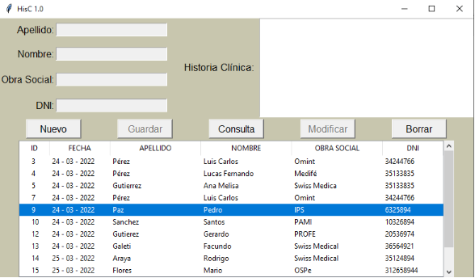
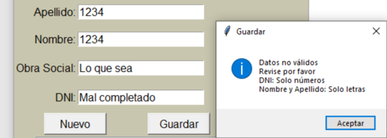
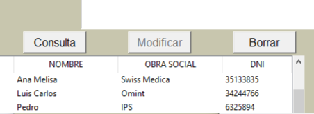
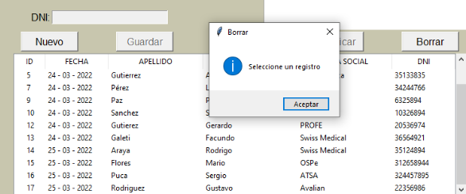
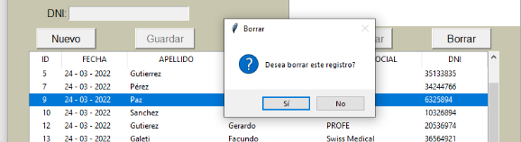
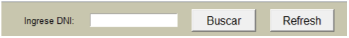
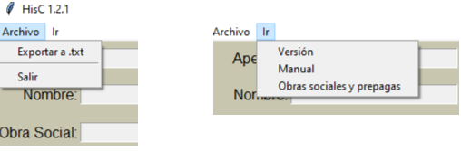

Como usar¶
Descripción de HisC 2.2¶
Como usar¶
- Trabajo Final:
Entrega Final Nivel Intermedio
Alumno: Pérez Luis
La app está creada para guardar visitas de pacientes. Cada vez que el dr. (usuario) reciba a un paciente podrá registrar sus datos principales además de poner un resumen de la visita. Esto le permitirá que, al finalizar la consulta, el dr. tenga la posibilidad de guardar un estilo de ficha médica en una base de datos.
La app cuenta con la posibilidad de hacer un alta, registro, consulta, modificación y baja.
Nuevo: Para dar el alta de la visita, el usuario debe presionar “Nuevo”, de esta manera se habilitarán los campos Apellido, Nombre, O Social, DNI e Historia clínica, donde los campos obligatorios para guardar el alta son Apellido, Nombre y DNI, ya que el paciente puede no poseer obra social, así como también no merece guardar una historia clínica.
Guardar: Al completar los datos del paciente, si alguno de los campos Apellido, Nombre y DNI está vacío o con caracteres erróneos, es decir, que para los nombres se usen letras y para el DNI se utilicen solo números, ahí la app permitirá guardar el registro presionando “Guardar”. Al guardar se le asigna un ID y fecha de la visita de manera automática. Dando la posibilidad al usuario de que el paciente vuelva y esta nueva alta tenga otra fecha distinta a las visitas anteriores.
Ejemplo: Si completa uno o más campos de manera incorrecta la app le dará este aviso
Consulta: Con esta función, el usuario al seleccionar un registro y presionar el botón “Consulta”, se rellenarán todos los campos, permitiéndole al usuario visualizar la historia clínica guardada, también se habilitará la función “Modificar” por si desea editar o agregar algún dato.
Modificar: Una vez que los datos están cargados en entradas de texto, el usuario podrá guardar dicha modificación, presionando el botón “Modificar”.
Se observa que el botón “Modificar” se encuentra desactivado, este estará así hasta que no se haga una consulta
Borrar: Este botón estará activo, pero se ejecuta cuando selecciona un registro, de lo contrario la app se lo pedirá. Ejemplo:
Registro no seleccionado
Registro seleccionado
Datos técnicos¶
Para la base de datos se utilizó SQLite3, expresiones regulares en los campos de Apellido, Nombre y DNI. También se utilizó el módulo datetime, para poder obtener la fecha del sistema actualizada. Las notificaciones de sucesos están en el alta, borrado de registro, o cuando el usuario ingresa datos incorrectos en ciertos campos, así como cuando intenta realizar una función sin un paso previo. Se escribió el código siguiendo la guía PEP8
Nuevas funciones de la versión 1.2.1¶
Nuevas funcionalidades:
Se agregó un botón “Buscar” que permite mostrar en tabla todas las coincidencias en DNI que encuentre en la base de datos, permitiendo ver solamente las historias clínicas del paciente que se busca, aprovechando que el DNI es una especie de ID por por paciente.
Refresh: Limpia el campo de búsqueda y restaura la tabla con todos los datos de la «base de datos”
Menú cascada:
El menú da las opciones de exportar la base de datos a un archivo .txt, así como consultar el manual y un sitio web con las obras sociales y prepagas Mejoras técnicas: Se rediseñó el código aplicando el patrón MVC y POO.
Nuevas funciones de la versión 1.2.2¶
Se trabaja con el ORM Peewee:
db = SqliteDatabase("hist.db")
class BaseModel(Model):
class Meta():
database = db
class Historia(BaseModel):
fecha_hoy = CharField()
apellido = CharField()
nombre = CharField()
o_social = CharField()
dni_h = CharField()
resumen = TextField()
class Funcion(Historia):
def __init__(self) -> None:
pass
def conectar(self, tabla):
self.reinicio_tree(tabla)
try:
db.connect()
db.create_tables([Historia])
self.inserta_en_tabla(tabla)
except:
pass